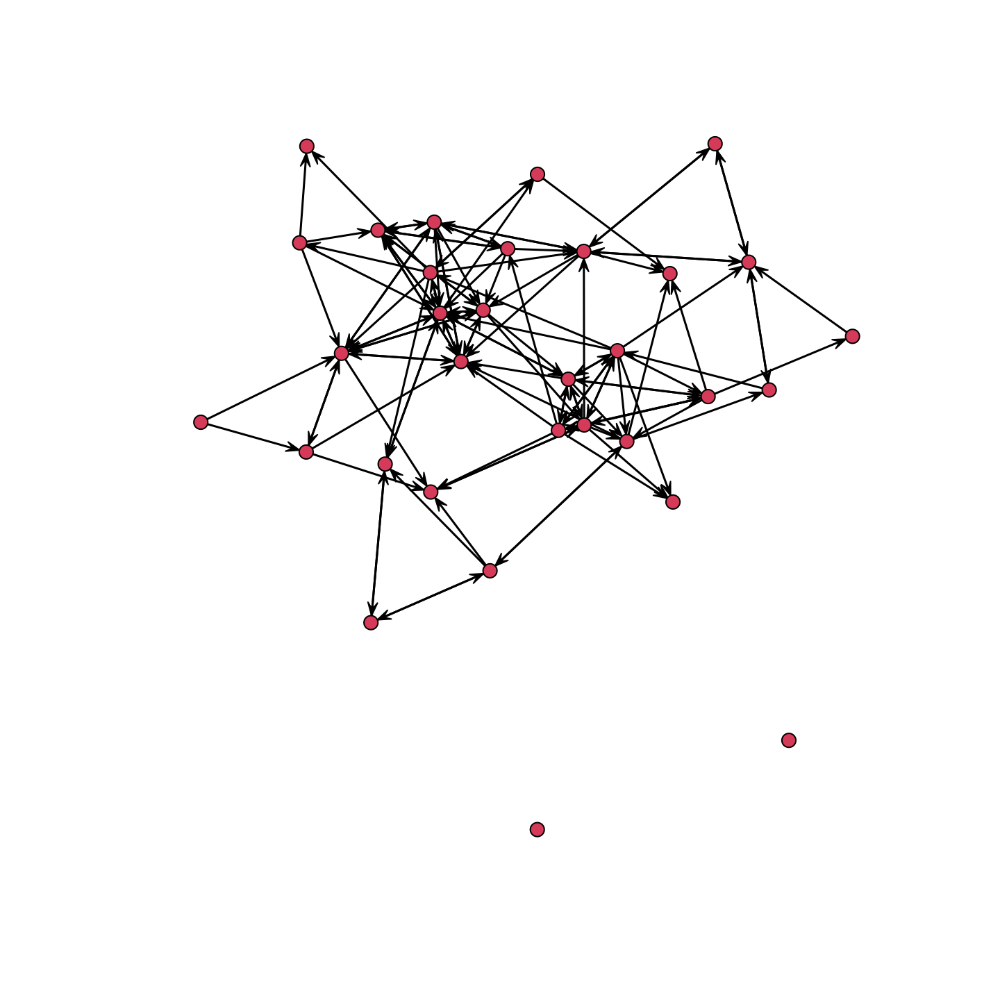
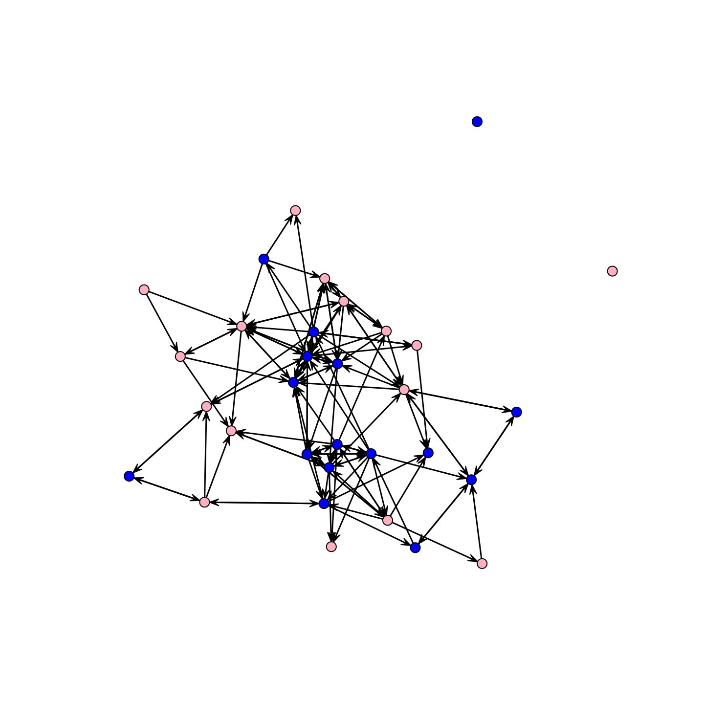

W12. Statistical models of networks
Statistical models of networks
- Focus on the method ERGM(exponential-family random graph models)
- Apply the model to a small school-based network(at one time point)
- Do boys tend to have more friends than girls?
- Is gender homophily a strong driver of tie formation?
Setting up the Session
Setting up the Session
- Read in our example network data(high school friendship network)
id1 id2 id3 id4 id5
id1 0 0 0 0 0
id2 0 0 0 0 0
id3 0 0 0 0 0
id4 0 0 0 0 0
id5 0 0 0 0 0Setting up the Session
- Read in the attribute file
Setting up the Session
- Recode the 0s and 1s into male and female
[1] "female" "female" "male" "male" "female" "female" "male" "female"
[9] "female" "male" "male" "male" "female" "female" "female" "female"
[17] "male" "female" "male" "male" "female" "male" "male" "male"
[25] "male" "female" "female" "female" "male" "male" "female" "male" Setting up the Session
- Construct a network(with network package)
Network attributes:
vertices = 32
directed = TRUE
hyper = FALSE
loops = FALSE
multiple = FALSE
bipartite = FALSE
total edges= 124
missing edges= 0
non-missing edges= 124
Vertex attribute names:
gender gender_recode grade ids ses vertex.names
No edge attributesDescriptive Analysis
Descriptive Analysis
Descriptive Analysis
- social divisions by grade

Fitting an ERGM
- ERGM(Exponential Random Graph Model)
- Predicts the presence/absence of a tie between all i-j pairs
- Interpret it as a network features like reciprocity and homophily
Fitting an ERGM
- Calculate the probability of every possible network
- The number of possible networks is unbelievably huge
- Instead of looking at all possible networks,
- Randomly sample some networks that the model is likely to produce
Fitting an ERGM
- MCMC(Markov Chain Monte Carlo)
- Generates many random networks that follow the model’s rules
- Uses them to estimate how the model behaves
Fitting an ERGM
- formula = the set of terms we want to include in the model
- control = list of options used in the MCMC sample
- constraints = a formula dictating if there should be any constraints on the networks generated in the MCMC sample
Simple ERGM
- Run an ERGM with only edges as a predictor
- Explain the school network as a function of the number of edges in the network
Simple ERGM
- Let’s take a look at the model results.
exp(-1.946) / (1 + exp(-1.946))= .125 (log-odds to probability)
Call:
ergm(formula = school_net ~ edges)
Maximum Likelihood Results:
Estimate Std. Error MCMC % z value Pr(>|z|)
edges -1.946 0.096 0 -20.27 <1e-04 ***
---
Signif. codes: 0 '***' 0.001 '**' 0.01 '*' 0.05 '.' 0.1 ' ' 1
Null Deviance: 1375.2 on 992 degrees of freedom
Residual Deviance: 747.5 on 991 degrees of freedom
AIC: 749.5 BIC: 754.4 (Smaller is better. MC Std. Err. = 0)1) Add options to ERGM
- Let’s add
nodematchterms for gender and grade in formula- Count the number of times that an edge exists where i and j have the same attribute
1) Add options to ERGM
Call:
ergm(formula = school_net ~ edges + nodematch("gender_recode") +
nodematch("grade"))
Maximum Likelihood Results:
Estimate Std. Error MCMC % z value Pr(>|z|)
edges -2.6140 0.1703 0 -15.351 <1e-04 ***
nodematch.gender_recode 0.1137 0.2086 0 0.545 0.586
nodematch.grade 2.3088 0.2144 0 10.769 <1e-04 ***
---
Signif. codes: 0 '***' 0.001 '**' 0.01 '*' 0.05 '.' 0.1 ' ' 1
Null Deviance: 1375.2 on 992 degrees of freedom
Residual Deviance: 635.7 on 989 degrees of freedom
AIC: 641.7 BIC: 656.4 (Smaller is better. MC Std. Err. = 0)2) Add options to ERGM
- Whether boys (compared to girls) send out and/or receive more ties
- Add
nodeifactorterms which capture if the mean number of ties coming in,nodeofactorfor going out - Add analogous terms for grade using
nodeicovandnodeocov
- Add
2) Add options to ERGM
Call:
ergm(formula = school_net ~ edges + nodematch("gender_recode") +
nodematch("grade") + nodeifactor("gender_recode") + nodeofactor("gender_recode") +
nodeicov("grade") + nodeocov("grade"))
Maximum Likelihood Results:
Estimate Std. Error MCMC % z value Pr(>|z|)
edges -7.54896 0.82637 0 -9.135 <1e-04 ***
nodematch.gender_recode 0.03797 0.22294 0 0.170 0.8648
nodematch.grade 2.49128 0.23497 0 10.603 <1e-04 ***
nodeifactor.gender_recode.male 0.45209 0.22428 0 2.016 0.0438 *
nodeofactor.gender_recode.male 0.55980 0.22467 0 2.492 0.0127 *
nodeicov.grade 0.26617 0.06388 0 4.167 <1e-04 ***
nodeocov.grade 0.18685 0.06275 0 2.978 0.0029 **
---
Signif. codes: 0 '***' 0.001 '**' 0.01 '*' 0.05 '.' 0.1 ' ' 1
Null Deviance: 1375.2 on 992 degrees of freedom
Residual Deviance: 586.6 on 985 degrees of freedom
AIC: 600.6 BIC: 634.9 (Smaller is better. MC Std. Err. = 0)3) Add options to ERGM
- Add a mutual term to the mode to identify reciprocity
mutualterm counts the number of pairs where i->j and j->i exist.- MCMC estimation : useful to set the input parameters to the estimation routine
4) Checking Model Works Well
- MCMC… Make sure that the algorithm converged
- Let’s see how the model looks using a
mcmc.diagnostics()function:
5) Checking Statistical Result
Call:
ergm(formula = school_net ~ edges + nodematch("gender_recode") +
nodematch("grade") + nodeifactor("gender_recode") + nodeofactor("gender_recode") +
nodeicov("grade") + nodeocov("grade") + mutual, control = control.ergm(MCMC.burnin = 50000,
MCMC.samplesize = 6000))
Monte Carlo Maximum Likelihood Results:
Estimate Std. Error MCMC % z value Pr(>|z|)
edges -6.46872 0.70547 0 -9.169 < 1e-04 ***
nodematch.gender_recode 0.02772 0.18945 0 0.146 0.88369
nodematch.grade 1.74006 0.21541 0 8.078 < 1e-04 ***
nodeifactor.gender_recode.male 0.28339 0.24137 0 1.174 0.24037
nodeofactor.gender_recode.male 0.45580 0.23983 0 1.900 0.05737 .
nodeicov.grade 0.21543 0.06848 0 3.146 0.00165 **
nodeocov.grade 0.10188 0.06828 0 1.492 0.13572
mutual 2.35763 0.36276 0 6.499 < 1e-04 ***
---
Signif. codes: 0 '***' 0.001 '**' 0.01 '*' 0.05 '.' 0.1 ' ' 1
Null Deviance: 1375.2 on 992 degrees of freedom
Residual Deviance: 546.8 on 984 degrees of freedom
AIC: 562.8 BIC: 602 (Smaller is better. MC Std. Err. = 0.1519)5) Add options to ERGM again
- Push this intuition a little further
- If boys have more reciprocated ties than girls, and thus are involved in more mutual dyads
5) Add options to ERGM again
Call:
ergm(formula = school_net ~ edges + nodematch("gender_recode") +
nodematch("grade") + nodeicov("grade") + nodeocov("grade") +
mutual(by = "gender_recode"), control = control.ergm(MCMC.burnin = 50000,
MCMC.samplesize = 6000))
Monte Carlo Maximum Likelihood Results:
Estimate Std. Error MCMC % z value Pr(>|z|)
edges -6.06819 0.67324 0 -9.013 < 1e-04 ***
nodematch.gender_recode 0.04863 0.18954 0 0.257 0.79750
nodematch.grade 1.69186 0.20902 0 8.094 < 1e-04 ***
nodeicov.grade 0.21676 0.06784 0 3.195 0.00140 **
nodeocov.grade 0.09894 0.06811 0 1.453 0.14631
mutual.by.gender_recode.female 0.92294 0.25763 0 3.582 0.00034 ***
mutual.by.gender_recode.male 1.45228 0.21951 0 6.616 < 1e-04 ***
---
Signif. codes: 0 '***' 0.001 '**' 0.01 '*' 0.05 '.' 0.1 ' ' 1
Null Deviance: 1375.2 on 992 degrees of freedom
Residual Deviance: 551.4 on 985 degrees of freedom
AIC: 565.4 BIC: 599.7 (Smaller is better. MC Std. Err. = 0.2344)6) Add options to ERGM again
- Include a control for degree differences (by gender) in the model
- If boys are more likely to be involved in mutual dyads because they send out more ties or because expectations of reciprocity are higher among boys
6) Add options to ERGM again
Call:
ergm(formula = school_net ~ edges + nodematch("gender_recode") +
nodematch("grade") + nodeofactor("gender_recode") + nodeicov("grade") +
nodeocov("grade") + mutual(by = "gender_recode"), control = control.ergm(MCMC.burnin = 50000,
MCMC.samplesize = 6000))
Monte Carlo Maximum Likelihood Results:
Estimate Std. Error MCMC % z value Pr(>|z|)
edges -6.35109 0.71008 0 -8.944 < 1e-04 ***
nodematch.gender_recode 0.05563 0.19035 0 0.292 0.770082
nodematch.grade 1.72196 0.21108 0 8.158 < 1e-04 ***
nodeofactor.gender_recode.male 0.49878 0.29636 0 1.683 0.092369 .
nodeicov.grade 0.21855 0.07013 0 3.116 0.001831 **
nodeocov.grade 0.09716 0.06815 0 1.426 0.153962
mutual.by.gender_recode.female 1.14881 0.30207 0 3.803 0.000143 ***
mutual.by.gender_recode.male 1.25276 0.23856 0 5.251 < 1e-04 ***
---
Signif. codes: 0 '***' 0.001 '**' 0.01 '*' 0.05 '.' 0.1 ' ' 1
Null Deviance: 1375 on 992 degrees of freedom
Residual Deviance: 548 on 984 degrees of freedom
AIC: 564 BIC: 603.2 (Smaller is better. MC Std. Err. = 0.224)Goodness of Fit
- Let’s see if the specified model is fitting the network well
- Test whether the micro-level tie formation processes assumed in the model are sufficient to reproduce the features of the network as a whole
Goodness of Fit
gof()function will simulate a set of networks based on the estimated model- Take the generated networks, calculate the macro features of interest (here distance and the shared partner distribution), and compare that to the true value
Goodness of Fit
- Plot the goodness of fit statistics.
- boxplot for distribution of simulation results
- thick line plot for statistics in true network

Adding GWESP to the Model
- Add a term to the model that will capture the tendency for nodes who are tied to have the same friends
- Capture clustering using a triangle term
- A triangle is defined as all cases where i-j and j-k exist and then either k->i or i->k exist
mod_homoph_mutual_gwesp1 <- ergm(school_net ~ edges +
nodematch("gender_recode") +
nodematch("grade") +
nodeifactor("gender_recode") +
nodeofactor("gender_recode") +
nodeicov("grade") + nodeocov("grade") +
mutual + gwesp(decay = 0.5, fixed = T),
control = control.ergm(MCMLE.maxit = 20,
MCMC.samplesize = 5000,
MCMC.burnin = 25000,
MCMC.interval = 10000,
MCMC.effectiveSize = 500,
seed = 123
))Simulate a Network with the ERGM Result
Adding GWESP to the Model
- plotting the true network and simulated network
Done!
- Please check KLMS for the assignment of this week(til Friday)
- If you want to study in-depth knowledge for statistical models of network, please check this week [Option] in the assignment